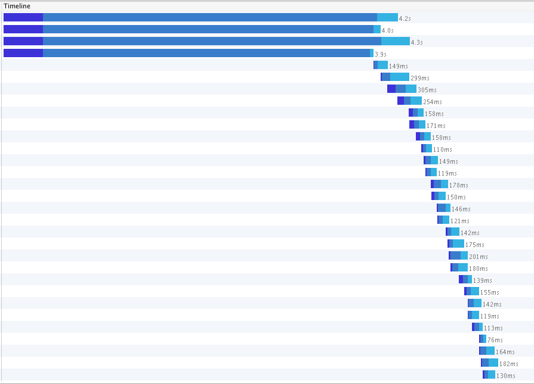

Table of Contents
- ECO CAST IPAD - Manage, record, and share casting sessions
- RANSOMR - Capture photos of letters, create "ransom" notes
- LOADOX - Database load testing platform
- SHOWFAX - Subscription service for downloading screenplay pages
- NFC DEAD DROP - A web enabled geocaching / scavenger hunt using NFC tags
- TWIINES - Timeline based micro-blogging. Share updates of projects and track personal goals in a clean and simple fashion
- BEVERAGE BRAND SPEC - A social platform where users can upload and vote on designs for a beverage company's labels
- FIST OF FIVE - Visualize classroom comprehension
Eco Cast iPad
Manage, record and share casting sessions
Available in App Store
Sign In Plan view with extended side menu Join video takes Drag and drop actors from list to audition blocks
Challenges:
- Drag and drop between view controllers
- Interaction with webservices
- Preventing and removing strong reference cycles
Specs:
- Designed for use with iPad Pro models
- Swift 3
Ransomr
Take photos of letters, cut them out and create ransom-style notes
In development
Challenges:
- Allow user to cut letters out of pictures
- Displaying letters in note, adding realism with randomized rotation
LoadOx
Database load testing through concurrent process generation. Helps team of database administrators simulate conditions that cause database errors.
Challenges:
- Produce system capable of creating significat sql traffic in controllable increments
- Store sequences to run in 'laps,' with variation between runs
- Parse stored sql statements, allow for insertion of set and/or arbitrary variables
- Deploy and maintain system for continued use by administrators
Example of an unsafe procedure discovered through LoadOx.
Specs:
- Ruby on Rails 4
- Sidekiq / Redis for background processing
- PostreSQL
SHOWFAX
Subscription service for downloading screenplay sides, empowering working actors across the country
Although our team completed development, the project was shelved and never deployed Home / Login Sides available for download / purchase Sides in user's cart
Challenges:
- Watermarking PDF files with asynchronous background processing
- Connecting Ruby on Rails to Microsoft SQL Server
- Optimizing site performance with reverse proxying and f5 load balancing
 Server caching at work
Specs:
- Ruby on Rails 4
- Puma Server
- NGINX for Static Assets
- Microsoft SQL Server
- Ubuntu
NFC Dead Drop

NFC Dead Drop is spinoff of the "USB Dead Drop" project mixed with elements of geocaching. A user must use the map pin and clues provided to track down a 'drop site'. Once located, the NFC tag can be scanned by smartphone, leading the user to the location check in page.

Challenges:
- Create URLs with a unique string to prevent forged check-in events
- Encode unique string to an NFC Tag using a usb writing device
- Displaying location of tags and recent check-ins using Google Maps API
- Create parrallax scrolling front page to make for an intriguing user experience
Specs:
- Ruby on Rails 4
- NFC Encoding
- PostgreSQL
- Skrollr
random_token = SecureRandom.urlsafe_base64(nil, false)Twiines

Twiines is a 'limited-scope microblogging platform' that focuses on sharing a chain of events such as a personal goal or project. These chains consist of goals and achievements and can be "twined" together with chains of other users.
Challenges:
- Route and understand complex model relationships in Rails and PostgreSQL.
- Configure Amazon Web Services to store user-uploaded photos.
- Sort and filter through multiple model objects for display.
- Structure timeline visual using CSS pseudo elements.
Specs:
- PostgreSQL formerly MongoDB
- Ruby on Rails 4
# sorts milestones and stones in the timeline view based on value. Instead of separating them out, and having
# two loops showing milestones and stones this allows the view to render them all together and sort them accordingly.
def combined_stone_mstone
milestone_objects = self.milestones.all
stone_objects = self.stones.all
@combined_timeline_objects = milestone_objects + stone_objects
@combined_timeline_objects = @combined_timeline_objects.sort {|m,s| s.sort_value <=> m.sort_value}
end
GUZL Voting Spec aka 'bevmaster'

Created as a spec for a potential beverage brand client to show a basic voting platform. It allows users to create and vote on beverage designs.
Challenges:
- Create a voting system
- Display vote breakdown using data visualization techniques
- Display can illustration with user-chosen colors
- Highlight colors chosen with responsive display
Specs:
- Ruby on Rails 4
- PostgreSQL
- Snap.svg
- D3.js
var dataset = {
// positive votes(green), meh votes (grey), negative votes (red). defined in the beverages controller.
states: [gon.positive, gon.meh, gon.negative]
};
var width = 400,
height = 400,
radius = Math.min(width, height) / 2;
// color range for pie chart. this pops each variable to a specific color.
var color = d3.scale.ordinal()
.range(["#3ab936", "#5d5d5d", "#ff2316"]);
// i love pie
var pie = d3.layout.pie()
.sort(null);
// sets the inner donut hole and outer radius
var arc = d3.svg.arc()
.innerRadius(radius - 75)
.outerRadius(radius - 40);
// i don't really love pie, but pie charts are cool. create pie chart here.
var svg = d3.select("#piechart").append("svg")
.attr("width", width)
.attr("height", height)
.append("g")
.attr("transform", "translate(" + width / 2 + "," + height / 2 + ")");
// append the pie to put the data in it. sort of like appending the crust to put the filling in it. just a lot less tasty.
// also the attrTween pops in the data in a slick animation.
var path = svg.selectAll("path")
.data(pie(dataset.states))
.enter().append("path")
.attr("fill", function(d, i) { return color(i); })
.transition().delay(function(d, i) { return i * 800; }).duration(800)
.attrTween('d', function(d) {
var i = d3.interpolate(d.startAngle, d.endAngle);
return function(t) {
d.endAngle = i(t);
return arc(d);
}
});Fist of Five

Fist of five gathers feedback from a classroom and generates a visual representation for the instructor. While following along with a lesson, each student rates their comprehension of a subject on a scale of zero to five. This data is available in real time, allowing on-the-fly pivots in teaching styles to improve lesson efficiency. Working as part of a group, I was tasked with using the D3 javascript framework and apply it to the data being generated.
Challenges:
- Graph numerical data with javascript data visualization framework: D3.js
- Adjust visualization to accomodate for real-time shifting sample size (amount of users) and user rating values
- Graph data for values from individual users
Specs:
- Ruby on Rails 4
- PostgreSQL
- D3.js
var x = d3.scale.linear().domain([0, data.length]).range([20, width+20]);
var y = d3.scale.linear().domain([0, 5]).range([12, height]);
var yScale = d3.scale.linear().domain([0,5]).range([height - 8, 8]);
// add the svg canvas to the DOM
var vis = d3.select("#Aratings")
// select rectangle elements in svg.
var bars = vis.selectAll("rect")
.data(data)
// show the bars.
bars.enter().
append("rect").
attr("fill", randomed()).
attr("x", function(datum, index) { return x(index); }).
attr("width", barWidth);
bars.transition().
duration(2000).
attr("height", height + margin.bottom).
attr("y", function(datum) { return height - y(datum.value); }).
attr("height", function(datum) { return y(height); });
d3.select("#Aratings")
.call(yAxis);